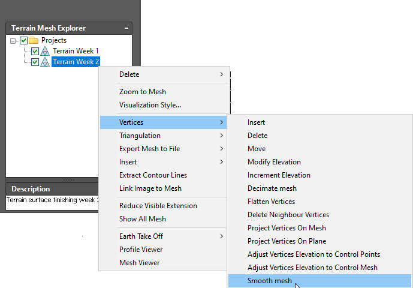

|
|
Toolbar:
Menu: CAD-Earth > Mesh commands > Mesh Explorer
|
|
|
Command line: CE_MESHEXPLORER
CAD-Earth version: Premium. |
(1).png)
.png)
(1).png)
Command description:
The Mesh Explorer is a tool to organize your project and have access to mesh importing, editing and visualization commands. By right-clicking on a tree node, you can add subproject folders and terrain mesh nodes. A context menu will be displayed, where you can select commands according to the node selected.
Within the Mesh Explorer, you can do the following selecting an item from the context menus:
•Add subproject folders, to better organize your information.
•Add terrain mesh nodes, by selecting entities such as points, 3D faces, polylines, or existing terrain meshes in the drawing.
•Import terrain meshes from LandXML, DEM, geoTIFF, LAS and XYZ text files.
•Get a terrain mesh from Google Earth or from the Cesium server.
•Export terrain meshes to a LandXML, GeoTIFF or XYZ file.
•Change the terrain mesh visualization style. You can display the mesh contour lines, vertices, boundary, triangulation, slope arrows, elevation and slope ranges. You can add, edit and save visualization styles.
•Select mesh commands, to edit mesh vertices and triangulation.
•Insert breaklines, 3D Polylines and points to modify the mesh configuration.
•Extract contour lines, than can be edited as regular polylines.
•Link and image to a mesh, selecting an existing raster image entity in the drawing.
•Reduce the mesh visible extension within a selected area or a closed polyline.
•Perform Earth Take Off volume calculations and reports by the volume grid method between two meshes.
•Access the Mesh and Profile Viewer, where you can trace temporary lines and inspect the profiles along those lines.

Tips:
•You can change the default node name and description at any time by clicking the selected node text or typing at the description text pane.
•The Mesh Explorer is a floating palette, you can leave it open, resize it, anchor to the left or right screen side, auto-hide and dock it just as a regular AutoCAD palette.
•If you have several drawings opened, the Mesh Explorer will be automatically updated according to the drawing selected.
•You can delete a node or the node and the contents if you no longer need them.
•The mesh associated with a node can be visually identified by selecting 'Zoom to Mesh' from the context menu.
•If you uncheck the box beside a tree node, all the entities contained within it will be made invisible. If you check the box, the entities will be made visible again.
Copyright © 2023 Arqcom Software
Google Earth© is a registered trademark of Google inc. All other trademarks are the property of their respective owners.